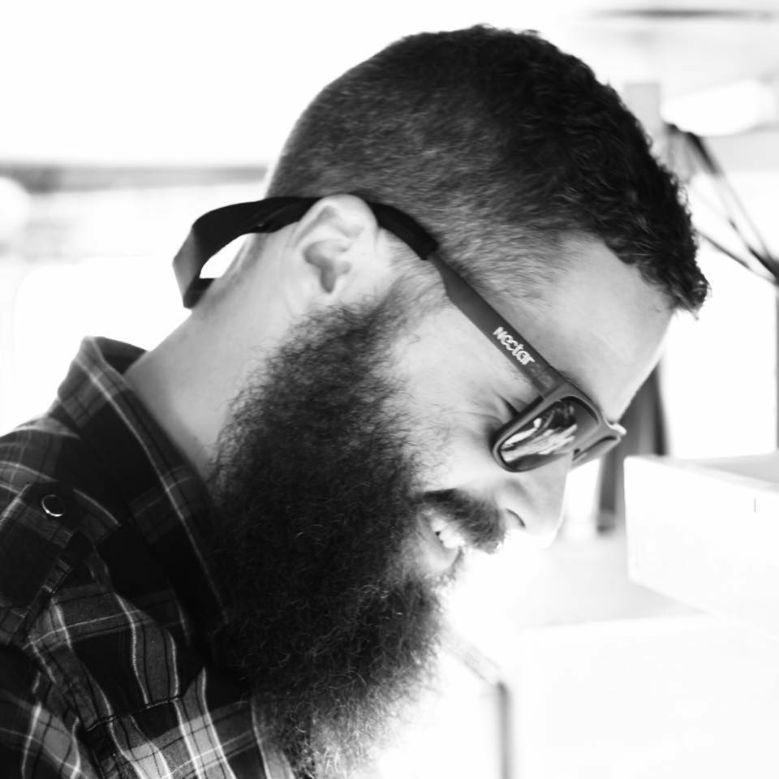
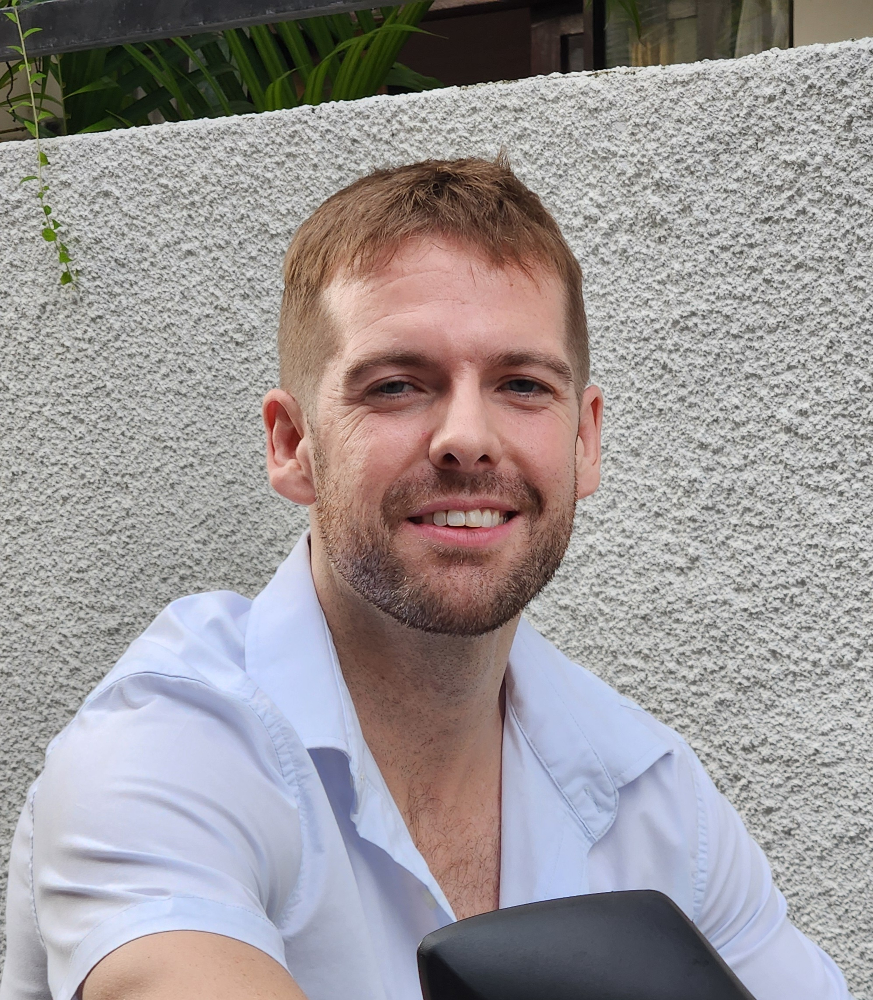

Two men, two diagnoses, and one shared mission to bridge the gap in men's mental health.

Steve is a 38 year old artist diagnosed with Bipolar Type 1. Steve lives in his home state of Rhode Island where he can focus on his work while also remaining close to his family. He is a glassblower, entrepreneur, and father of two cute and surprisingly well-behaved children.
Steve’s main hobby is collectibles - acquiring, admiring, and re-selling. He has become an expert in the realms of Hot Wheels and Pokemon cards - two brands of collectibles that allow him to explore his own passions while connecting with his kids.

Kyle is a 37 year old writer diagnosed with Bipolar Type 2. Kyle lives in Bali, Indonesia for the freedom and lifestyle it so generously offers him. He makes his living primarily through ghostwriting, but has found that his greatest passion lies in speaking - especially podcasting.
Kyle’s greatest interests include meditation, psychology, and reading. He is obsessed with learning about people in general and has the dangerous tendency to diagnose those around him regardless of his utter lack of psychology credentials.